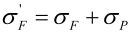
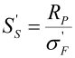
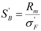
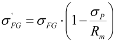
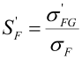
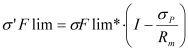

|
|
|


预张力
压配合或其他影响齿根应力的处理方法的影响，可通过预张力 σP 加以考虑。该值会影响计算出的齿根应力以及根据以下公式确定的安全系数：
对于静态强度：



对于疲劳强度：


预张力 σP 仅仅在报告中生成额外的结果。结果窗口中的结果保持不变。用户在“强度”>“细节”中定义此内容。
注 1
此规则未在 ISO 标准中说明。 因此，如果要考虑预张力效应，我们建议您务必极度谨慎。 这些公式由Alstom Ecotecnia提出。KISSsoft 仅在报告中显示此效果。
注2
如果主要计算（单载荷或载荷谱）需要使用此规则，则值σ’Flim必须按’FG的方程进行更改，如下所示：

σ’Flim 应该代替 σFlim 引入材料值中；然后主要计算使用此预张力规则进行。
Pretension
The influence of a press fit or other processing methods that influence tooth root stress can be taken into account with the pretension σP . This value influences the calculated tooth root stress as well as the safety according to the following formulae:
For static strength:
For fatigue strength:
The pretension σP merely generates additional results in the reports. The results in the results window remain unchanged. You define this under "Strength" > "Details".
Note 1
This rule is not documented in the ISO standard. For this reason, we recommend extreme caution if the pretension effect is to be taken into account. The formulae are proposed by Alstom Ecotecnia. KISSsoft only shows this effect in the report.
Note 2
If the main calculation (single load or load spectra) requires the use of this rule, the value σ’Flim must be changed as follows, according to the equation for ’FG:
σ’Flim has to be introduced instead of σFlim in the material values; then the main calculation is performed using this pretension rule.